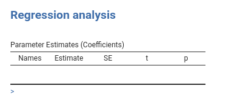

Chapter 3 Results
library(mcdocs)
knitr::knit_engines$get("yaml")3.1 Preparing the results
Results in jamovi are organized in tables (and some other widget type). Tables are
<a href=‘https://r6.r-lib.org/articles/Introduction.html’ target=’_blank>R6 classes</a> with many different properties and options, which allow the programmer to fine-tune the look and feel of the results in almost every details. The full information about <span class="jamovi"><a href="http://www.jamovi.org" target="_blank">jamovi</a></span> results widgets can be found at the <a href='https://dev.jamovi.org/api_results-definition.html' target='_blank>jamovi hub.
jmvScaffold provides a R6 class, named SmartTables, which interface the programmer with the jamovi results API. With that, you can do a lot of things without touching the jamovi results classes. Before that, however, we need to declare what our tables should be. In our little project, we need at least one table for the regression results.
It is a good idea, I suggest, to see how the R table would look like. In R, we would obtain the results of a linear regression with lm() command from stats:: package, so we basically need to run this
# data will arrive from jamovi, here we fake one dataset
data <- data.frame(y=rnorm(50),x=rnorm(50))
model <- stats::lm(y~x,data=data)
.summary <- summary(model)
.coeffs <- .summary$coefficients
.coeffs## Estimate Std. Error t value Pr(>|t|)
## (Intercept) -0.04691999 0.1434221 -0.3271462 0.7449797
## x 0.06420510 0.1551427 0.4138455 0.6808306Because we do not want spaces in the table heads, we can rename the table names to obtain a solid table, as a dataset.
# data will arrive from jamovi, here we fake one dataset
.coeffs <- as.data.frame(.coeffs)
names(.coeffs)<-c("coef","se","t","p")
.coeffs## coef se t p
## (Intercept) -0.04691999 0.1434221 -0.3271462 0.7449797
## x 0.06420510 0.1551427 0.4138455 0.6808306now that we know how our table will look like we should get into the R programming.
As a side note, I would suggest to always use R commands prefixed with their package, such as stats::lm rather than lm. This is required if you want to publish your R module in CRAN, and it makes your code much more readable. It is like calling functions with their name and surname, and we want to be polite with our functions.
3.2 Defining the result tables (.r.yaml)
All results tables (and other widgets) are defined in the .r.yaml. Here we need a table that will represent the R table we have seen before. So we need the following code.
---
name: myRegression
title: Regression analysis
jrs: '1.1'
- name: coefficients
title: Parameter Estimates (Coefficients)
type: Table
columns:
- name: source
title: "Names"
type: text
- name: coef
title: "Estimate"
type: number
- name: se
title: SE
type: number
- name: t
title: "t"
type: number
format: zto
- name: p
title: "p"
type: number
format: zto,pvalue
---So, a widget of type Table, with columns defined by a name, a title and a format. Details of all widgets definitions can be found in the <a href=‘https://dev.jamovi.org/api_results-definition.html’ target=’_blank`>jamovi hub
Compiling the module after defining the table in the .r.R file produces the table in the output (still empty)

3.3 R code for jamovi
When we first compiled our module, jamovi compiler produced to two R files and put them in the ./R folder.

The .h.R file can be ignored, the jamovi compiler produces it every time we install the module. The important file is the .b.R file, where all the action takes place. The .b.R file contains a R6 class named [analysisname]Class, in our case myRegressionClass. The class contains (at least) two private functions, the .init() function and the .run() function. Those are the functions that we need to customize.
Before we dive into it, let’s spend two words about how jamovi process works.
When the user opens the analysis, or whenever the GUI is update, jamovi runs your R module in the .b.R file. It calls the .init() function first and then the .run() function. Actually, the .init() function can be absent, but my suggestion is to define it for all analyses, because in the .init() function the tables are formated and prepared to be filled. They are filled in the .run() function.
A working .b.R file, that does not do anything, is the following:
myRegressionClass <- if (requireNamespace('jmvcore', quietly=TRUE)) R6::R6Class(
"myRegressionClass",
inherit = myRegressionBase,
private = list(
.init = function() {
# `self$data` contains the data
# `self$options` contains the options
# `self$results` contains the results object (to populate)
},
.run = function() {
# `self$data` contains the data
# `self$options` contains the options
# `self$results` contains the results object (to populate)
}
)
)Here is where jmvScaffold comes handy. First, we want to be sure to have installed the jmvScaffold classes. To do that, in R we simply run this code (recall from 1.2 that we installed the jmvScaffold R package)
jmvScaffold::copy_files()which copies in the present module ./R folder the necessary files.